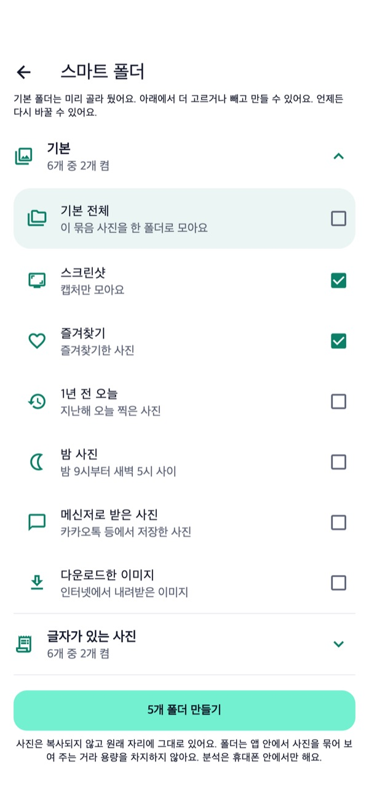

새로운 기능
1. 묶음을 폴더 하나로 · 묶음 폴더2. 폴더 이름으로 찾으세요3. 스마트 폴더가 늘었어요4. 잠금 화면에서 바로 찾기 · 잠금 화면 위젯 (아이폰·아이패드)5. 1초 만에 찾기 · 바로가기6. 홈 화면에서 바로 찾기 · 위젯
1. 묶음을 폴더 하나로 · 묶음 폴더
"취미·운동", "물건·음식"처럼 묶음 전체를 폴더 하나로 만들 수 있습니다.
- "사진" 탭에서 스마트 폴더 오른쪽 메뉴의 "폴더 고르기"를 누르세요.
- 원하는 묶음을 펼치세요.
- 맨 위의 "○○ 전체"를 켜세요. 그 묶음에 든 폴더 사진이 한 폴더에 모입니다.
- 같은 사진은 한 번만 들어갑니다.

예시: 취미·운동 전체 물건·음식 전체
2. 폴더 이름으로 찾으세요
켜 둔 스마트 폴더 이름을 검색창에 넣으면 그 폴더 사진도 결과 아래에 함께 나옵니다. 두세 개를 띄어 쓰면 모두에 들어 있는 사진만 보여 줍니다.
- 자세한 방법은 검색 정확도 올리는 방법 · 폴더 이름으로 찾으세요를 보세요.
예시: 강아지 바다 노을
3. 스마트 폴더가 늘었어요
사진을 알아서 모아 주는 스마트 폴더가 늘었습니다.
- "사진" 탭 → 스마트 폴더 켜기(또는 "폴더 고르기")에서 켤 수 있습니다.
- 새로 생긴 폴더 예: 노을, 야경, 풍경, 등산, 낚시, 다이빙·물속, 클라이밍, 오토바이, 악기·연주, 수족관, 해산물, 고기구이, 생일, 커피·컵, 책, 가방, 신발.

4. 잠금 화면에서 바로 찾기 · 잠금 화면 위젯 (아이폰·아이패드)
잠금 화면에 LYNO Find를 놓으면 잠금을 풀자마자 바로 찾을 수 있습니다.
- 잠금 화면을 길게 누르고 "사용자화"를 누르세요.
- 잠금 화면을 고른 뒤, 시계 아래 칸을 누르세요.
- LYNO Find를 고르세요. 검색 동그라미, 가로로 긴 검색 칸, 음성 검색 동그라미가 있습니다.
- 날짜를 누르면 날짜 옆에 한 줄로도 놓을 수 있습니다.
- 누르면 바로 검색이 열리고, 음성 검색 동그라미는 바로 말로 찾습니다.
💡 잠금 화면 위젯은 아이폰과 아이패드에만 있습니다.
5. 1초 만에 찾기 · 바로가기
앱 아이콘을 길게 누르면 바로 검색이나 음성 검색으로 들어갈 수 있습니다.
- 앱 아이콘을 길게 누르면 "검색"과 "음성 검색"이 나옵니다.
- 아이폰: 시리에게 "리노파인드에서 검색"이라고 말해도 됩니다. 시리가 무엇을 찾을지 물어보면 대답하세요.
- 안드로이드: 화면 위에서 아래로 내려 빠른 설정 편집(연필 모양)에서 "LYNO Find 검색"을 추가하면 어디서든 한 번에 열립니다.
예시: 리노파인드에서 검색 리노파인드에서 문서 찾아줘
6. 홈 화면에서 바로 찾기 · 위젯
홈 화면에 검색 위젯을 놓으면 앱을 찾지 않아도 바로 검색할 수 있습니다.
- 아이폰: 홈 화면 빈 곳을 길게 누른 뒤 왼쪽 위 "편집" → "위젯 추가"에서 LYNO Find를 고르세요. 작은 것과 가로로 긴 것이 있습니다. 잠금 화면에도 놓을 수 있습니다.
- 안드로이드: 홈 화면 빈 곳을 길게 누른 뒤 위젯에서 LYNO Find를 홈 화면에 놓으세요. 가로로 늘리면 더 크게 보입니다.
- 위젯을 누르면 바로 검색창이 열리고, 마이크를 누르면 바로 음성 검색입니다.